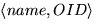

As a hybrid system, Shore may be described as a file system augmented with database features or a DBMS with file-system features. In this section, we will describe the basic features of Shore, explaining how it combines important ideas from these two areas in order to arrive at a system capable of addressing the variety of application requirements discussed in the introduction.
Shore is a collection of cooperating data servers, with each data server containing typed persistent objects. To organize this universe of persistent Shore objects, a Unix-like name space is provided. As in Unix, named objects can be directories, symbolic links, or individual (typed) objects (the counterpart of Unix ``plain'' files). Unlike Unix, Shore allows each object to be accessed by a globally unique Object Identifier (OID) that is never reused. Shore also introduces a few new types of objects, including types and pools, as described in more detail in Section 2.3.
The type system for Shore objects is language-neutral, supporting applications in any programming language for which a language binding exists. For objects whose primary data content is textual or untyped binary data, Unix file system calls are provided to enable legacy applications (such as existing language compilers or CAD tools) to access their data content in an untyped manner. Shore is structured as a peer-to-peer distributed system; each node where objects are stored or where an application program wishes to execute contains a Shore server process that talks to other Shore servers, interfaces to locally executing applications, and caches data pages and locks in order to improve system performance.
The Shore object model, like many database object models, consists of objects and values. Every persistent datum in Shore is an object, and each object has an identity denoted by a unique object identifier or OID. Structurally, an object is a container for a value; the value can be simple or structured, and may include references to (typed OIDs of) other objects. Every value has a type, as does every object. Behaviorally, each object has a set of methods through which its contents can be accessed and manipulated. The internal structure and methods available for a given object are dictated by the object's type, referred to as its interface type, and every Shore object is tagged with a reference to a type object that captures this information.
A Shore object is much lighter-weight than a Unix file, but it may still be
too heavy to support fine-grained data structures that are customarily
represented as linked lists, trees, or other graph structures in
non-persistent programs.
To support the flexibility of dynamic structures with the efficiency of
(logically) contiguous blocks on secondary storage, Shore allows each
object to be extended with a variable-sized heap
(see
Figure 3
).
The core of an object is described by its type.
The heap is used by the system to store variable-sized components of its
value such as strings, variable arrays, and sets. The heap can also
contain dynamic values which are similar to ``top-level'' objects,
but do not have independent identity (for example, when the object is
destroyed, all of its dynamic values are destroyed as well).
Dynamic values can be linked together with local references,
which are stored on disk as offsets from the start of the heap, but are
swizzled in memory to actual memory addresses. The O2 commercial
OODBMS [Deu91]
provides a related facility with its objects/values distinction;
the main difference is that in O2 the encapsulated values must form a
set, list, or array, whereas in Shore the heap can contain an arbitrary
data structure. With demand-paging support for very large
objects, each object heap closely resembles a small
Object Store database [LLOW91] 
From a file system standpoint, Shore provides two major services. First, to
support object naming and space management in a world with many persistent
objects, Shore provides a flexible object name space. Second, to enable legacy
Unix file-based applications to continue to exist while new Shore applications
are being developed, mechanisms are provided that permit Shore object data to
be accessed via Unix file system calls.
Shore provides a tree-structured, Unix-like name space in which all
persistent objects are reachable, either directly or indirectly, from a
distinguished root directory. By
doing so, Shore gives users a framework in which to
register both individual persistent objects and the roots of
large persistent data structures, a framework that provides a much
richer naming environment than the single-level ``persistent root''
directory found in EXODUS and most other current OODBs. The realization of this framework involves
extending the set of familiar Unix object types (directories,
symbolic links, and ``regular files'') with cross references,
pools, modules, and type objects
The realization of this framework involves
extending the set of familiar Unix object types (directories,
symbolic links, and ``regular files'') with cross references,
pools, modules, and type objects .
.
Shore directory objects provide the same facilities as Unix directories.
Familiar Unix concepts such as path name, subdirectory, parent directory,
link (both hard and symbolic), and
root directory are all defined as they are in Unix [RT74]. As in Unix,
a directory is a set of  pairs.
The OID can refer to any other Shore object, but the system maintains
the Unix invariant that the set of directories forms a single rooted tree.
Directories and the objects they contain are called registered objects.
Each registered object contains a set of system properties, which are
a superset of the Unix attributes:
ownership, access permissions, and time stamps. To support lighter-weight objects,
Shore introduces a new kind of (registered) object called a
pool.
Members of a pool, called anonymous objects, are clustered
near each other on disk and share most of the Unix attributes (ownership,
etc.) with the pool. Anonymous objects do not have path names, but they
can be accessed by OID like any other object. There is also an operation to
enumerate the contents of a pool (which can be accessed by OID or path name).
The registered property is orthogonal to type:
Any type of object can be created either in a pool (as an anonymous object)
or in a directory (as a registered object). We expect that in a typical
Shore database, the vast majority of objects will be anonymous, with a few
registered objects serving as roots or entry points to graphs of anonymous
objects.
To support lighter-weight objects,
Shore introduces a new kind of (registered) object called a
pool.
Members of a pool, called anonymous objects, are clustered
near each other on disk and share most of the Unix attributes (ownership,
etc.) with the pool. Anonymous objects do not have path names, but they
can be accessed by OID like any other object. There is also an operation to
enumerate the contents of a pool (which can be accessed by OID or path name).
The registered property is orthogonal to type:
Any type of object can be created either in a pool (as an anonymous object)
or in a directory (as a registered object). We expect that in a typical
Shore database, the vast majority of objects will be anonymous, with a few
registered objects serving as roots or entry points to graphs of anonymous
objects.
To preserve the invariant that all objects are reachable from the root of the directory system, Shore imposes different deletion semantics on registered and anonymous objects. As in Unix, a registered object is not explicitly deleted; it is reclaimed by the system when its link count (the number of directory entries referring to it) drops to zero. An anonymous object can be deleted at any time, but a pool can only be deleted when it is empty. An OID is thus a ``soft'' reference, in that it may dangle if the object to which it refers is deleted. (Since OIDs are never reused, however, it will never accidentally capture a new object.) Since OIDs can be stored in the contents of arbitrary objects, any stronger integrity guarantee would be impractical to enforce.
Shore introduces three more fundamental kinds of objects,
modules, type objects, and cross references.
Modules and type objects are similar to pools and anonymous objects,
respectively, but have different deletion semantics to preserve the
existence dependency from objects to their types.
Cross references are similar to symbolic links in that they provide a
way to insert an alias for an object into the directory name space,
but look somewhat like hard links when used through NFS.
While a symbolic link contains a path name for a registered object,
a cross reference contains the OID of an arbitrary object.
Cross references, like symbolic links, are ``soft'' (permitted to dangle).
They are intended primarily for the Unix compatibility feature described in the
following section.

Figure 4 illustrates these concepts. The directory /u/smith contains the entries project, doc, and pool1, referring to another directory, a cross reference, and a pool, respectively. The registered object /u/smith/project/entries contains pointers to members of pool1. It might be some sort of application-defined ``directory'' of entry points to a data structure. The symbolic link /u/smith/project/README is an alias for the cross reference /u/smith/doc, which is itself an alias for a member of pool1. An attempt to access either of these path names through the Unix compatibility interface will resolve to that anonymous object.
While Shore provides a much richer environment than traditional file systems, there are many situations where tools designed to be used on files need to be invoked on database objects. A typical example is provided by the CAPITL project [AS93], which uses EXODUS. CAPITL improves on current software-development environments by maintaining a rich set of attributes and relationships for each object in its repository (program sources, object files, specifications, documents, etc.) It represents each object as a directed graph, with intra- and inter-object links represented by OIDs. While tools developed as part of CAPITL take full advantage of this rich structure, it is occasionally necessary to invoke existing tools such as compilers or editors on objects stored in the database. Three possible approaches were to rewrite the tools to access CAPITL objects, to copy the contents of an object to a file before operating on it (and copy back the results), or to keep the contents permanently in files, storing only metadata and file names in the CAPITL database. All of these approaches are unsatisfactory for various reasons. The solution found for CAPITL, which we have generalized and expanded in Shore, is to provide a special Unix compatibility feature. Each Shore object may optionally designate a range of bytes as its text field. A compatibility library provides versions of Unix system calls such as open, read, write, and seek, interpreting pathname arguments in the Shore name space and satisfying requests by fetching or updating the text field of objects. Registered objects without text fields behave like /dev/null (they read as zero length and ignore attempts to change them). Anonymous objects can be accessed via cross references.
For applications that cannot even be re-linked, we have constructed
an NFS file server [SGK+85]. An entire subtree of the Shore
name space can be ``mounted'' on an existing Unix file system. When
applications attempt to access files in this portion of the name space,
the Unix kernel generates NFS protocol requests that are handled by the
Shore NFS value-added server.
As we mentioned in Section 1.1, one important motivation for Shore was to rectify some of the shortcomings of EXODUS, many of which are shared by other existing object-oriented databases. Access control and name space limitations were addressed in the previous section. Process structure is addressed in Section 3. In this section we describe the design and implementation of the Shore type system and indicate how it supports hardware and language heterogeneity.
The Shore type system is embodied by the SHORE Data Language, SDL, the language in which Shore types are defined. SDL is quite similar in nature to the Object Definition Language (ODL) proposal from the ODMG consortium [Cat93], which is descended from OMG's Interface Description Language (IDL), a dialect of the RPC interface language used in OSF's Distributed Computing Environment (DCE). Our work on SDL started at roughly the same time as ODMG's work, and we also used OMG's IDL as a starting point. We have been following the development of ODL, but we had to proceed as well rather than waiting for ODMG to complete their work. (At this time, the ODMG standards are still only in the late paper design stage, and portions are not yet entirely clear or internally consistent.) The goals of ODMG are also somewhat different from ours. They concentrate on a standardized interface to existing C++ oriented OODBs, while our focus has been support for inter-language object sharing within a large name space of objects.
All objects are instances of interface types,
types constructed with the interface type constructor. Interface
types can have methods, attributes, and relationships. The attributes of
an interface type can be of one of the primitive types (e.g., integer,
character, real), or they can be of constructed types. Shore provides the
usual set of type constructors: enumerations, structures, arrays, and
references (which are used to define relationships). In addition, Shore
provides a variety of bulk types, including sets, lists, and
sequences, that enable a Shore object to contain a collection of references
to other objects. Finally, Shore provides the notion of modules, to
enable related types to be grouped together for name scoping and type
management purposes. To provide a brief taste of SDL,
Figure 5
shows how one of the OO7
benchmark [CDN93] types can be defined.
Shore is intended to allow databases built by an
application written in one language (e.g., C++) to then be accessed and
manipulated by applications written in other object-oriented languages as
well (e.g., CLOS). This capability will be important for large-scale
applications, such as VLSI CAD; C++ might be used for
efficiency in simulating large chips, while CLOS (or perhaps Smalltalk)
might be more convenient for writing the associated design-rule checking
and user interface code. In Shore, the methods associated with SDL
interfaces can therefore be written using any of the languages for which a
Shore language binding exists. Currently, only the C++ binding is
operational, so we will illustrate Shore's language binding concepts by
briefly discussing the Shore C++ binding.
An application, such as the OO7 benchmark, is created as follows.
The first step is to write a
description of the types in SDL. In our OO7 example, this description is
saved in a file called oo7.sdl. The next step is to use the SDL type
compiler to create type objects corresponding to the new types. The type
compiler is a Shore application that creates type objects from SDL
definitions. A language-specific tool (in our case, sdlcxx) is then used
to derive a set of class declarations and special-purpose function definitions
from the type objects.
In our example, this generated code is placed in
two files: oo7.h, and oo7.C. The header file oo7.h is
included both in the C++ source files that supply the (application-specific)
implementation of member functions such as traverse and swapXY,
and in source files that manipulate instances of AtomicPart, etc.
The OID of the type object is compiled into these files and used to
catch version mismatches at runtime.
A language-specific tool (in our case, sdlcxx) is then used
to derive a set of class declarations and special-purpose function definitions
from the type objects.
In our example, this generated code is placed in
two files: oo7.h, and oo7.C. The header file oo7.h is
included both in the C++ source files that supply the (application-specific)
implementation of member functions such as traverse and swapXY,
and in source files that manipulate instances of AtomicPart, etc.
The OID of the type object is compiled into these files and used to
catch version mismatches at runtime.
A fragment of the generated oo7.h file is shown in Figure 6. Some of the data member types in Figure 6 correspond directly to SDL types, as C++ (like most languages) offers direct support for those simple types. For Shore types with no corresponding C++ type, like sets and references, a language-appropriate presentation of the SDL type is generated. For C++, Shore presents references, sets, and other collection types using pre-defined, macro-based classes (similar to parameterized types) such as REF and BAG_INV_DECL in Figure 6. The class REF(CompositePart) encapsulates an OID; C++ overloading features make it behave like a pointer to a read-only instance of CompositePart. The class BAG_INV_DECL(Connection, ...) encapsulates a data structure containing a set of OIDs and provides member functions that enable its contents to be accessed; the _INV_DECL suffix and other macro arguments enable the generated class to do its part in maintaining the inverse relationship declared in the SDL schema.
Given the header file generated by the binder, the application programmer
can implement the operations associated with the OO7 interfaces. In the
C++ binding, access to simple data members is provided safely through the
use of several techniques. As mentioned above, REF-generated classes
behave like read-only pointers, so information about an atomic part
could be printed by a function as follows:
void printPart(REF(AtomicPart) p) {
cout << "Type " << p->ptype
<< " part at (" << p->x << ","
<< p->y << ")\n";
}
This function can directly access
the part_type, x, and y
data members of an atomic part, but it cannot update them. (Attempts to
do so would be flagged as an error by the C++ compiler.) Similarly, member
functions that do not update the contents of an object are flagged as const in their SDL definition, as illustrated in
Figure 5
(and attempts to call a non-const member function through a REF
are also caught by the compiler).
To modify an object, the C++ application must first call a special generated
member function, update, which returns a read-write reference. For
example, the following code fragment directly exchanges the x and
y attributes of an atomic part:
REF(AtomicPart) p = ... ;
long tmp = p->x;
p.update()->x = p->y;
p.update()->y = tmp;
The function update coerces the type of p from
REF(AtomicPart) to (non const) AtomicPart *.
It also has the runtime effect of marking the referenced object as ``dirty''
so that changes will be transmitted to the server when the transaction
commits.
Since the member function swapXY is not declared to be const in
Figure 6,
another legal way to accomplish this exchange
would be to define this member function as follows:
void AtomicPart::swapXY() {
long tmp = x;
x = y;
y = tmp;
}
Given this definition, swapXY could then be invoked to do the
job.
REF(AtomicPart) p = ... ;
p.update()->swapXY();
The Shore C++ binding implements collection types similarly to C++
OODBs [LLOW91,Obj92,Ont92,Ver92]: A template type
(in this case, one implemented via the use of C++ macros) such as
BAG_INV_DECL(Connection, ...) in
Figure 6
contains a member function get_elt that gets a specified element
from the collection. For example, the printPart function could be
extended to print an atomic part's outgoing connections as follows:
void printPart(REF(AtomicPart) p) {
cout << "Type " << p->ptype << " part at ("
<< p->x << "," << p->y
<< ") with outgoing connections\n";
int i;
REF(Connection) c;
for (c = to.get_elt(i=0); c != NULL; c = to.get_elt(++i)) {
c->print();
cout << endl;
}
}
Shore provides
support for concurrency control (via locking) and crash recovery (via
logging); these services are integrated with the support
for data caching described below. Shore will  also
provide users with a choice of lower levels of consistency and recovery.
Details of these reduced levels are still being worked out.
Other Shore services will include optimized object queries over
bulk types (currently being implemented based on the OQL language, as
specified by ODMG [Cat93]) and a flexible, user-controllable notion of
``sticky'' object clusters to permit users to cluster and later recluster
related objects (also being designed and implemented currently).
also
provide users with a choice of lower levels of consistency and recovery.
Details of these reduced levels are still being worked out.
Other Shore services will include optimized object queries over
bulk types (currently being implemented based on the OQL language, as
specified by ODMG [Cat93]) and a flexible, user-controllable notion of
``sticky'' object clusters to permit users to cluster and later recluster
related objects (also being designed and implemented currently).